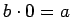
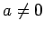
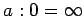

Inhalt Index DeskTop Bronstein

 Arithmetik Elementare Rechenregeln Zahlen Natürliche, ganze und rationale Zahlen
Arithmetik Elementare Rechenregeln Zahlen Natürliche, ganze und rationale Zahlen


Die arithmetischen Operationen (Addition, Subtraktion, Multiplikation und Division) mit zwei beliebigen rationalen Zahlen sind stets möglich und liefern im Ergebnis wieder eine rationale Zahl. Eine Ausnahme davon ist die Division durch Null, die unmöglich ist: Die Schreibweise a : 0 hat keinen bestimmten Sinn, da es keine bestimmte rationale Zahl b gibt, die der Gleichung  mit  genügt. Für a = 0 kann b eine beliebige rationale Zahl sein. Die oft verwendete Schreibweise  (unendlich) bedeutet nicht, daß diese Division möglich ist; es ist lediglich eine Abkürzung für die Aussage: Wenn sich der Nenner Null nähert, wächst der Quotient absolut genommen über alle Grenzen.